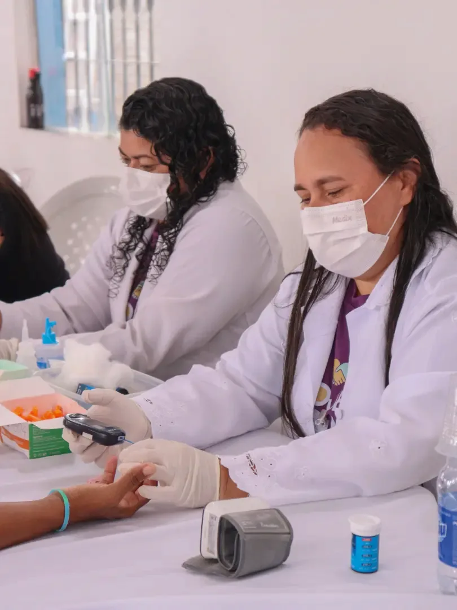
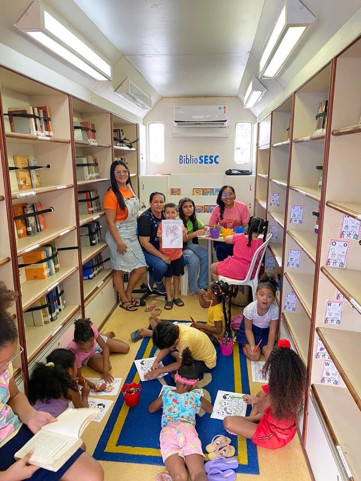

Ação AMA
A Acéo Social AMA é o brago de atendimento itinerante e emergencial do instituto. Periodicamente, organizamos grandes mutirdes que mobilizam profissionais voluntarios nas areas de clinica médica, pediatria, atendimento odontoldgico, fisioterapia, assisténcia juridica, cortes de cabelo, estética e distribuicdo de cestas de alimentos para familias em extrema vulnerabilidade.



Atendimento Humanitário e Solidariedade Direta
A Ação Social AMA é o braço itinerante do instituto, promovendo acolhimento, cidadania e dignidade com mutirões humanizados em comunidades urbanas e rurais.
Mutirões de Saúde & Cidadania
Levamos atendimentos médicos, odontológicos, enfermagem, suporte psicológico, corte de cabelo, estética e assessoria jurídica gratuita diretamente até as famílias em vulnerabilidade.
- ✓ Atendimentos clínicos, pediátricos e odontológicos preventivos
- ✓ Emissão de documentos, orientação jurídica e apoio social
- ✓ Entrega direta de cestas básicas, roupas e kits de higiene pessoal
Cestas Básicas & Nutrição
Arrecadação e montagem mensal de cestas alimentares para famílias sem renda fixa.
Campanhas Sazonais
Ações especiais no Natal Solidário, Páscoa, Dia das Crianças e retorno às aulas.
Suporte em Emergências
Pronto atendimento logístico e doações imediatas em situações de vulnerabilidade crítica.
Calendário de Ações e Como Participar
Profissionais de saúde, advogados, barbeiros e voluntários operacionais podem se cadastrar para participar das próximas edições. Empresas parceiras podem patrocinar a compra de insumos médicos e cestas básicas com total prestação de contas.
Ações em Campo e Mobilização
Registros das entregas de alimentos, atendimentos itinerantes e atuação direta dos voluntários na comunidade.
Entrega Direta de Alimentos e Cestas

Atendimento Humanitário e Cidadania

Acolhimento Comunitário e Afeto
Ajude a Combater a Vulnerabilidade
Sua doação em dinheiro ou cestas básicas garante a continuidade dos mutirões comunitários e do atendimento emergencial às famílias que mais precisam.
Outros Projetos do Instituto AMA
Autonomia & Renda
Capacitação para negócios femininos e o Selo AMA de Origem.
Saiba mais →Qualificação Profissional
Formação técnica e inclusão no mercado de trabalho.
Saiba mais →